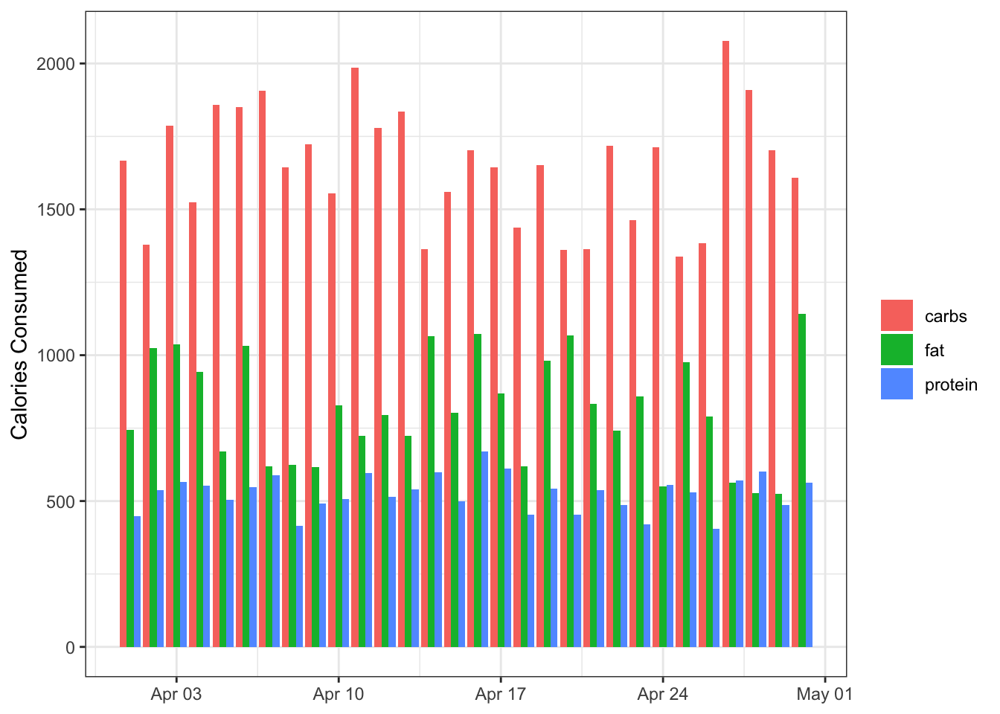
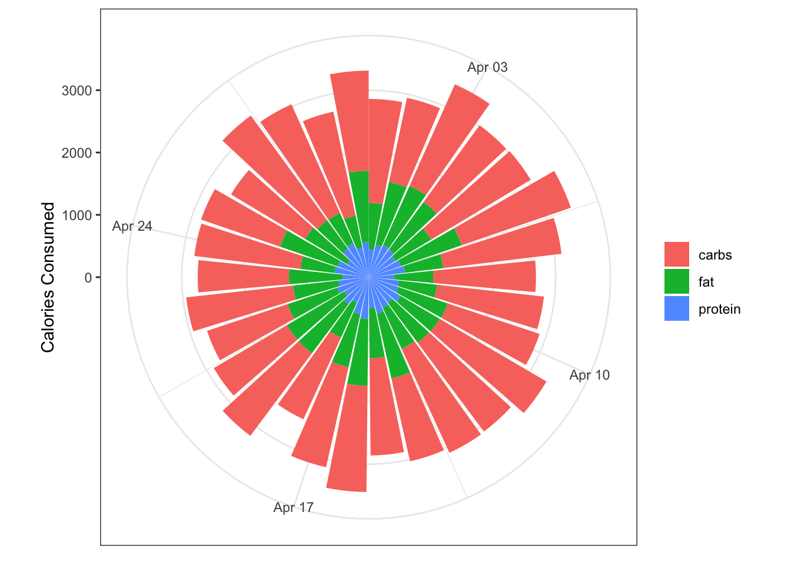
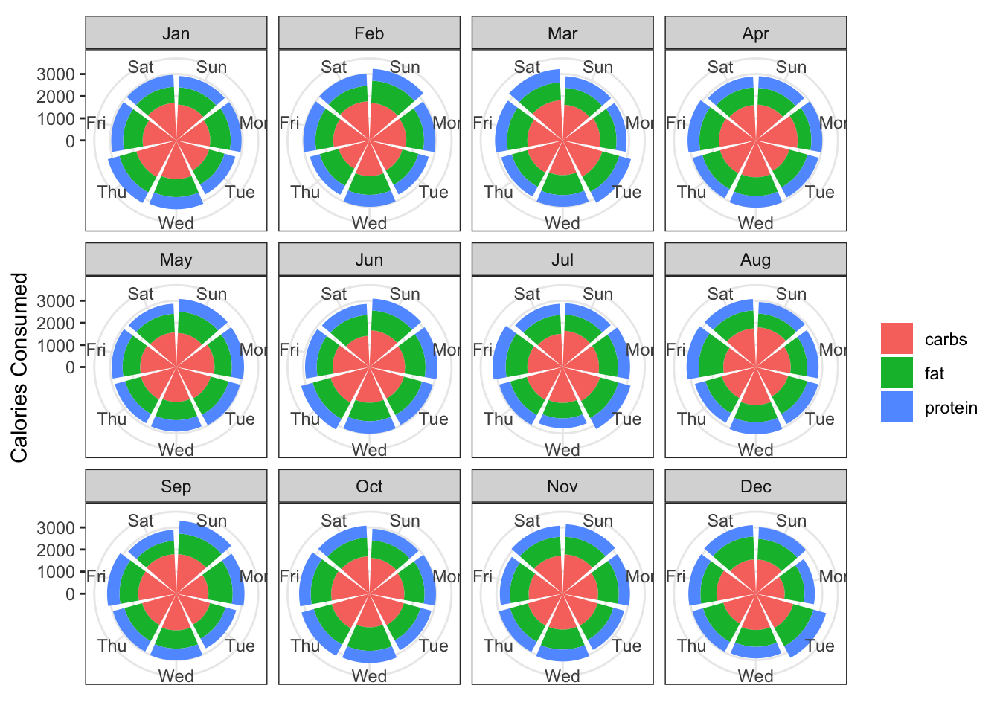

library(tidyverse)
library(lubridate)
theme_set(theme_bw())I am intrigued by the #30DaysChartChallenge that started today. It’s a “…community-driven event with the goal to create a data visualization on a certain topic each day of April”. Each day you’re provided a prompt and using any tools you develop a data visualization.
I think this would be a great way to learn some new R tidyverse and tidymodelling skills so thought I’d give it a try. I am not sure how many days I will be able to keep it up, but day one was fun.
Overview
Today’s prompt was “part-to-whole”. I will be honest, I didn’t know what was meant by a “part-to-whole” data visualisation, so I did what all the cool kids are doing these days and I asked Chat-GPT:
OK, that’s a little clearer. What is more clear is that I am not going to do a pie chart! But first I need some data.
Ultrarunning & Eating
Since the UK lockdown in March 2020 I’ve caught the running bug. Last year, I completed my first marathon, and I have signed up to two marathons this year. The marathon is—obviously—a tough distance; but some (crazy) people run Ultra-marathons which is any race longer than the 26.2 miles of a standard marathon.
If you’re training for an ultra-marathon, you probably want to make sure your diet during your training is good to ensure you are getting the necessary nutrients and energy. It’s not untypical for ultra-runners to consume anywhere between 3,000 to 6,000 calories a day during training. As for macro-nutrient recommendations, the guidelines for ultra-runners are not very different from those for other endurance athletes. The general recommendation for endurance athletes is as follows:
- Carbohydrates: 45-65% of total daily calories.
- Protein: 15-20% of total daily calories.
- Fats: 20-35% of total daily calories.
Let’s say you’re interested in making a daily log of your total daily calorie intake together with tracking your macro-nutrients. For each day, how did each of the macro-nutrients (i.e., the part) contribute to total calorie intake (i.e., the whole)?
Simulating the data
First let’s load the required packages and do a general set-up:
Let’s simulate data for the month of April 2023. For each day, we log/generate the following data:
- date: Date of the daily log
- day: What was the day of the week? We might be interested how macros and total calories varies by day of the week.
- calories_total: Simulate total daily calorie intake. For this we assume a normal distribution with mean of 3,000 calories and a standard deviation of 250.
- prop_carbs: For each day, what is the proportion of total calories made up from carbohydrates. As this is a proportion, for each day we generate a random number between 0.45 and 0.65.
- prop_protein: For each day, what is the proportion of total calories made up from protein? For each day we generate a random number between 0.15 and 0.20.
- prop_fat: For each day, what is the proportion of total calories made up from fat? As the proportions for each macro-nutrient need to sum to 1, fat is just 1 minus prop_carbs and prop_protein.
# simulate the data
set.seed(123)
data <- tibble(
date = lubridate::ymd(paste("2023-04-", 1:30, sep = "")),
day = lubridate::wday(date, label = TRUE),
calories_total = rnorm(n = 30, mean = 3000, sd = 250),
prop_carbs = runif(n = 30, min = 0.45, max = 0.65),
prop_protein = runif(n = 30, min = 0.15, max = 0.20),
prop_fat = 1 - (prop_carbs + prop_protein)
)
data# A tibble: 30 × 6
date day calories_total prop_carbs prop_protein prop_fat
<date> <ord> <dbl> <dbl> <dbl> <dbl>
1 2023-04-01 Sat 2860. 0.583 0.157 0.260
2 2023-04-02 Sun 2942. 0.469 0.183 0.348
3 2023-04-03 Mon 3390. 0.527 0.167 0.306
4 2023-04-04 Tue 3018. 0.505 0.183 0.312
5 2023-04-05 Wed 3032. 0.613 0.166 0.221
6 2023-04-06 Thu 3429. 0.540 0.159 0.301
7 2023-04-07 Fri 3115. 0.612 0.189 0.199
8 2023-04-08 Sat 2684. 0.612 0.155 0.233
9 2023-04-09 Sun 2828. 0.609 0.173 0.218
10 2023-04-10 Mon 2889. 0.538 0.176 0.286
# … with 20 more rowsWe can then use these proportions for each macro to calculate how many of the day’s total calories were from carbohydrates, protein, and fats. Once we have this we can remove the proportion columns.
data <- data %>%
mutate(calories_carbs = calories_total * prop_carbs,
calories_protein = calories_total * prop_protein,
calories_fat = calories_total * prop_fat) %>%
select(-starts_with("prop_"))
data # A tibble: 30 × 6
date day calories_total calories_carbs calories_protein calories_fat
<date> <ord> <dbl> <dbl> <dbl> <dbl>
1 2023-04-01 Sat 2860. 1667. 448. 745.
2 2023-04-02 Sun 2942. 1380. 537. 1025.
3 2023-04-03 Mon 3390. 1786. 567. 1037.
4 2023-04-04 Tue 3018. 1524. 552. 942.
5 2023-04-05 Wed 3032. 1859. 503. 670.
6 2023-04-06 Thu 3429. 1851. 546. 1032.
7 2023-04-07 Fri 3115. 1907. 589. 620.
8 2023-04-08 Sat 2684. 1644. 415. 625.
9 2023-04-09 Sun 2828. 1722. 490. 616.
10 2023-04-10 Mon 2889. 1554. 507. 827.
# … with 20 more rowsIn order for us to do visualisations we need to change the calorie data into long format.
data <- data %>%
pivot_longer(calories_total:calories_fat,
names_to = "source") %>%
mutate(source = str_remove(source,"calories_"))
data# A tibble: 120 × 4
date day source value
<date> <ord> <chr> <dbl>
1 2023-04-01 Sat total 2860.
2 2023-04-01 Sat carbs 1667.
3 2023-04-01 Sat protein 448.
4 2023-04-01 Sat fat 745.
5 2023-04-02 Sun total 2942.
6 2023-04-02 Sun carbs 1380.
7 2023-04-02 Sun protein 537.
8 2023-04-02 Sun fat 1025.
9 2023-04-03 Mon total 3390.
10 2023-04-03 Mon carbs 1786.
# … with 110 more rowsDifferent Visualisations
Bar plot
Ahh the good old humble bar plot. Not really useful for a part-to-whole visualisation (ha! Suddenly I’m a know-it-all on part-to-whole visualisations), but here it is anyway:
bar <- data %>%
filter(source != "total") %>%
ggplot(aes(x = date, y = value, group = source)) +
geom_col(aes(fill = source),
position = "dodge") +
labs(x = NULL,
y ="Calories Consumed",
fill = NULL)
bar
Not bad, but it’s hard to differentiate the different days during the month.
Stacked column plot
A stacked column plot is similar to the bar plot but the bars are—you guessed it—stacked on top of each other:
stacked_column <- data %>%
filter(source != "total") %>%
ggplot(aes(x = date, y = value)) +
geom_col(aes(fill = source)) +
labs(x = NULL,
y ="Calories Consumed",
fill = NULL)
stacked_column
This is clearly better than the bar plot. One useful aspect of this plot is that we get multiple points of information: The height of each column shows the total calories consumed (the whole), and the colours represent the macros that make up that total (the part). It’s very basic, but it’s functional.
Polar plot
I am not sure if this is the correct term for it, but you can wrap the column plot around polar coordinates using coord_polar() in ggplot. This makes it look snazzier, but I am not sure it is more informative.
polar <- data %>%
filter(source != "total") %>%
ggplot(aes(x = date, y = value)) +
geom_col(aes(fill = source)) +
coord_polar() +
labs(x = NULL,
y ="Calories Consumed",
fill = NULL)
polar
It’s definitely snazzier, and you still retain a feel for the total calories consumed each day. It is harder to ready the y-axis (calories consumed) for each point, and whilst we’re at it the x-axis (date) isn’t that clear either.
We also get an idea of the macro contributions to the total, but in the current plot this isn’t completely satisfactory because it’s hard to visualise the category with the smallest proportion (protein). To address this we can reverse the ordering on the geom_col() call using the position argument so that the category with the smallest contribution is on the outer section of each column.
polar_reversed <- data %>%
filter(source != "total") %>%
ggplot(aes(x = date, y = value)) +
geom_col(aes(fill = source),
position = position_stack(reverse = TRUE)) +
coord_polar() +
labs(x = NULL,
y ="Calories Consumed",
fill = NULL)
polar_reversed
Here they are all next to each other:
library(patchwork)
(bar + stacked_column) / (polar + polar_reversed)
Grouping by day
Maybe you want to log how your macros vary on average by day. To do this, we group our data by the day of the week and calculate averages for each day and plot these. We need to briefly go back to wide data to calculate the relevant averages
day_data <- data %>%
pivot_wider(names_from = source, values_from = value) %>%
group_by(day) %>%
summarise(carbs = mean(carbs),
protein = mean(protein),
fat = mean(fat)) %>%
pivot_longer(carbs:fat, names_to = "source")
day_data# A tibble: 21 × 3
day source value
<ord> <chr> <dbl>
1 Sun carbs 1575.
2 Sun protein 536.
3 Sun fat 943.
4 Mon carbs 1674.
5 Mon protein 560.
6 Mon fat 821.
7 Tue carbs 1571.
8 Tue protein 532.
9 Tue fat 816.
10 Wed carbs 1669.
# … with 11 more rowsday_data %>%
ggplot(aes(x = day, y = value)) +
geom_col(aes(fill = source),
position = position_stack(reverse = TRUE)) +
coord_polar() +
labs(x = NULL,
y ="Calories Consumed",
fill = NULL)
Grouping by month and day
So you’re really keen and you’ve logged your calorie intake daily throughout all of 2023. Let’s calculaute the average for each day of the week, and see how these totals change across the months of the year.
First let’s simulate some data for the entire year. This is similar to earlier, but we first need to create a date column that spans the whole year.
# create a data frame with all the days of the year
year_data <- tibble(year = 2023) %>%
mutate(date = list(seq(lubridate::ymd(paste0(year, "-01-01")),
lubridate::ymd(paste0(year, "-12-31")),
by = "day"))) %>%
unnest(date) %>%
select(-year)
# simulate calorie data
set.seed(234)
year_data <- year_data %>%
mutate(day = lubridate::wday(date, label = TRUE),
month = lubridate::month(date, label = TRUE),
calories_total = rnorm(n = 365, mean = 3000, sd = 250),
prop_carbs = runif(n = 365, min = 0.45, max = 0.65),
prop_protein = runif(n = 365, min = 0.15, max = 0.20),
prop_fat = 1 - (prop_carbs + prop_protein)) %>%
mutate(calories_carbs = calories_total * prop_carbs,
calories_protein = calories_total * prop_protein,
calories_fat = calories_total * prop_fat) %>%
select(-starts_with("prop_")) %>%
pivot_longer(calories_total:calories_fat,
names_to = "source") %>%
mutate(source = str_remove(source,"calories_"))Now we have this let’s follow previous steps and view a stacked column plot, faceting by month.
year_data %>%
filter(source != "total") %>%
group_by(day, month, source) %>%
summarise(mean_value = mean(value)) %>%
ungroup() %>%
ggplot(aes(x = day, y = mean_value)) +
geom_col(aes(fill = source),
position = position_stack(reverse = TRUE)) +
labs(x = NULL,
y ="Calories Consumed",
fill = NULL) +
facet_wrap(~month)
A slight tweak is needed to the x-axis labels to make them more readable:
year_data %>%
filter(source != "total") %>%
group_by(day, month, source) %>%
summarise(mean_value = mean(value)) %>%
ungroup() %>%
ggplot(aes(x = day, y = mean_value)) +
geom_col(aes(fill = source),
position = position_stack(reverse = TRUE)) +
labs(x = NULL,
y ="Calories Consumed",
fill = NULL) +
theme(axis.text.x = element_text(angle = 90)) +
facet_wrap(~month)And the polar plot equivalent:
year_data %>%
filter(source != "total") %>%
group_by(day, month, source) %>%
summarise(mean_value = mean(value)) %>%
ungroup() %>%
ggplot(aes(x = day, y = mean_value)) +
geom_col(aes(fill = source),
position = position_stack(reverse = TRUE)) +
coord_polar() +
labs(x = NULL,
y ="Calories Consumed",
fill = NULL) +
facet_wrap(~month)